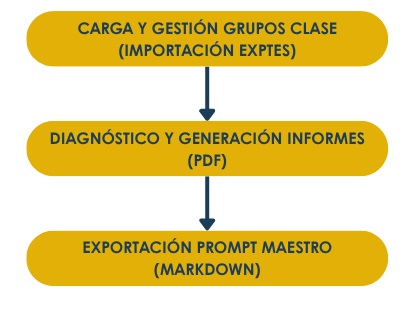

Alcance, contexto de desarrollo y flujo de trabajo
La presente guía de operación y flujo de trabajo tiene como propósito fundamental orientar al usuario en sus primeros pasos dentro del ecosistema ALMENDRA. Concebida tanto para docentes sin experiencia previa en herramientas de analítica avanzada como para perfiles con interés en la ingeniería de prompts, esta sección desglosa de manera visual e intuitiva la secuencia lógica de pasos necesaria para transformar los datos de evaluación en decisiones pedagógicas y materiales de aula.
Para una correcta interpretación de esta guía y del uso diario de la aplicación, es imprescindible tener en cuenta los siguientes aspectos clave:
- Naturaleza del Software y Estado de Desarrollo (Versión Beta): ALMENDRA se encuentra actualmente en fase beta de pruebas y desarrollo activo. Como tal, es una herramienta viva en constante evolución técnica. Durante su ejecución es posible que se registren incidencias puntuales, comportamiento de interfaz en pruebas o ajustes en los tiempos de respuesta.
- Propósito Fundamental: El objetivo nuclear del software es actuar como un asistente que libera tiempo de la labor burocrática. Mediante la automatización de análisis matemáticos complejos (como la extracción de la fotografía competencial colectiva o la detección de asignaturas traccionadoras), el programa devuelve al docente el margen temporal necesario para centrarse en la intervención directa y la atención a la diversidad en el aula.
Flujo trabajo en ALMENDRA
